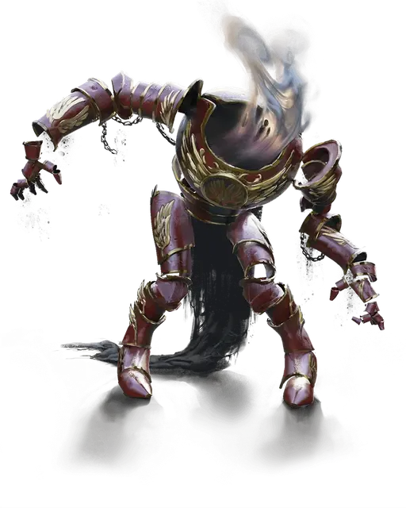

Оживлённая броня Страда
Strahd’s Animated Armor
Средний Конструкт, законно-злой

Класс Доспеха 21 (природный доспех)
Хиты 112 (15к8 + 45)
Скорость 30 футов
| мод | спас | ||
|---|---|---|---|
| СИЛ | 17 | +3 | +3 |
| ЛОВ | 13 | +1 | +1 |
| ТЕЛ | 16 | +3 | +3 |
| мод | спас | ||
|---|---|---|---|
| ИНТ | 9 | −1 | −1 |
| МДР | 10 | +0 | +0 |
| ХАР | 9 | −1 | −1 |
Навыки Восприятие +3
Сопротивление урону огонь, холод
Иммунитет к урону электричество, яд
Иммунитет к состояниям окаменение, ослепление, отравление, паралич, очарование, глухота, испуг, истощение
Чувства слепое зрение 60 футов, пассивное Восприятие 13
Языки Понимает Общий, но не может говорить
Опасность 6 (2300 опыта)
Бонус мастерства +3
Особенности
Восприимчивость к антимагии. Броня становится выведенной из строя, пока находится в поле антимагии. Если он станет целью рассеивания магии [dispel magic], броня должна будет совершить спасбросок Телосложения со сложностью, равной сложности спасброска от заклинаний наложившего рассеивание и, при провале, потерять сознание на 1 минуту.
Обманчивая внешность. . Пока броня не двигается, её невозможно отличить от обычного комплекта брони.
Действия
Мультиатака. . Доспех совершает две рукопашные атаки или использует Шокирующий Снаряд дважды.
Двуручный меч. Рукопашная атака оружием: +6 к попаданию, досягаемость 5 футов, одна цель. Попадание: 10 (2к6 + 3) рубящего урона плюс 3 (1к6) урона электричеством.
Шокирующий Снаряд. Дальнобойная атака заклинанием: +4 к попаданию (с преимуществом на бросок атаки если цель носит металлический доспех), дистанция 60 футов, одна цель. Попадание: 10 (3к6) урона электричеством.
Описание
Доспех, который Страд носил в битвах при жизни, продолжает жить поныне в виде безголового, оживлённого комплекта лат. Доспех выкрашен багровой краской и украшен золотыми орнаментами на ангельскую тему.
Вещь зла. Страд наделил эту оживлённую вещь частичкой самого себя, передав доспеху столь злобный нрав, которого нет ни в одном оживлённом предмете. Он также укрепил свой доспех и сотворил на него несколько постоянных эффектов заклинаний, чтобы доспех был лучшим защитником замка. Броня понимает Общий, но подчиняется только приказам её хозяина.